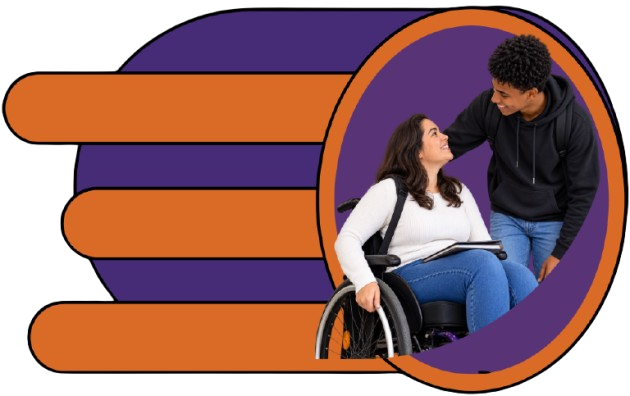
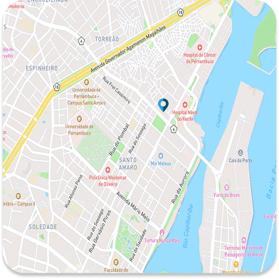

Encontre a escola que tem a adaptação que seu filho precisa
“Escola acessível” não diz nada. Aqui você vê cada adaptação, com a nota dada por outras famílias.
Achar escola Avaliar escola
Água Fria, Recife · Censo 2025
Comece pela necessidade
Deseja avaliar alguma escola? Avalie.
Sua experiência ajuda a próxima família.
Bem avaliadas de cada região
Uma escola com a maior pontuação em cada bairro consultado.
Achar escola
Escolas
Nenhuma escola encontrada. Tente outro bairro ou outro nome.

Endereço:
Avaliado por famílias
Comentários das famílias
Carregando avaliações...
Avalie
Sete notas rápidas, de 1 a 5 estrelas. A descrição é opcional.
Sobre nós
O Enlace Digital nasceu para que famílias de pessoas com deficiência escolham a escola pela adaptação que realmente precisam.
O problema
Muitas escolas dizem ser “acessíveis”, mas isso não diz se há rampa, intérprete de Libras ou apoio para autismo.
Como as notas funcionam?
Cada família avalia por adaptação, numa escala de 1 a 5. O portal mostra as médias, o número de avaliações e as descrições deixadas pelas famílias.
As notas são “avaliadas por famílias”: não são uma certificação da escola.
Piloto
Começamos pela região metropolitana do Recife e queremos crescer com a ajuda das famílias.
Fale conosco
[E-MAIL DE CONTATO] · [INSTITUIÇÃO / EQUIPE]